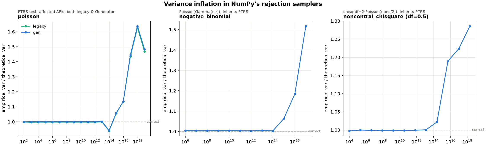

Sampler error zoo.
Exact arithmetic would make random samplers impractically slow, so practical samplers run on finite-precision floating point. That speed comes at a cost. This site shows ten cases in NumPy where finite precision changes probabilities or produces values outside mathematical support, each with runnable code and NumPy source.
NumPy Poisson case study
Variance inflation in NumPy Poisson
For a Poisson distribution with rate λ, both the mean and variance equal λ. That gives us a direct check: draw many samples and divide their empirical variance by λ. The result should be close to 1.

Rounding breaks the sampler’s accept/reject step.
At large λ, NumPy proposes an integer k from a hat distribution, then uses an acceptance test to convert the distribution of k back to a Poisson distribution. For some proposals, the test needs to evaluate the Poisson log probability of k.
NumPy computes this log probability by subtracting terms near 10²⁰. Rounding can make this subtraction return zero, considerably distorting the acceptance test.
log P(K = k) = −λ + k log(λ) − log Γ(k + 1)At λ = 9 × 10¹⁸, compare a count at the center with two counts in the upper tail:
| Candidate | Ideal log probability | Illustrative binary64 result |
|---|---|---|
| k = λ | −22.74 | 0 |
| k = λ + √λ | −23.24 | 0 |
| k = λ + 2√λ | −24.74 | 0 |
The rounded illustration gives all three candidates the same score. A rejection test using such scores cannot apply the needed correction to convert the hat distribution back to a Poisson distribution. Here k log(λ) ≈ 3.93 × 10²⁰, where adjacent binary64 numbers are 65,536 apart.
Run the measurement yourself.
This snippet samples NumPy’s Generator.poisson, then compares the measured variance with λ.
You can edit the code before running it. Results come from the connected Python backend, whose NumPy version is shown in the panel. Sampling is empirical, so the ratio varies slightly between runs.
Variance / λ
Expected: near 1.0. The high-rate example has returned roughly 1.66.
The hosted backend has a time limit. If it is asleep or unavailable, copy the snippet into a local Python environment with NumPy.
The zoo
Ten NumPy sampler cases.
Open a card for the numerical failure, NumPy source, and runnable code. Legacy covers RandomState and module-level draws such as np.random.poisson(...); Generator comes from default_rng. Their sampling algorithms can differ. The Legacy and Generator labels show which interface is affected in NumPy 2.4.3.